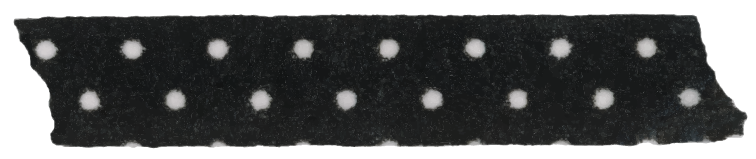
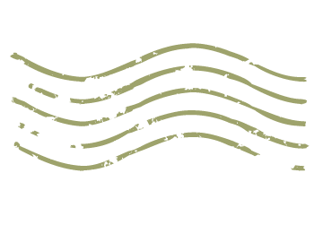

기도폐쇄祈禱閉鎖2021.05.02
속절없는두려움과무력의늪에발목을욱여넣고서생각한다호흡의단절은어디로부터오는가검은실로된생각이폭포처럼쏟아지는그늪은숨을망각시킨다코와입과목구멍으로뿌리를펴들어오는검은선들눈알로빠져나오는삶과그곳에드리운그림자가있다속절없는두려움과무력의늪에발목을욱여넣고서생각한다호흡의단절은어디로부터오는가검은실로된생각이폭포처럼쏟아지는그늪은숨을망각시킨다코와입과목구멍으로뿌리를펴들어오는검은선들눈알로빠져나오는삶과그곳에드리운그림자가있다속절없는두려움과무력의늪에발목을욱여넣고서생각한다호흡의단절은어디로부터오는가검은실로된생각이폭포처럼쏟아지는그늪은숨을망각시킨다코와입과목구멍으로뿌리를펴들어오는검은선들눈알로빠져나오는삶과그곳에드리운그림자가있다속절없는두려움과무력의늪에발목을욱여넣고서생각한다호흡의단절은어디로부터오는가검은실로된생각이폭포처럼쏟아지는그늪은숨을망각시킨다코와입과목구멍으로뿌리를펴들어오는검은선들눈알로빠져나오는삶과그곳에드리운그림자가있다
속절없는두려움과무력의늪에발목을욱여넣고서생각한다호흡의단절은어디로부터오는가검은실로된생각이폭포처럼쏟아지는그늪은숨을망각시킨다코와입과목구멍으로뿌리를펴들어오는검은선들눈알로빠져나오는삶과그곳에드리운그림자가있다
물 안에 잠긴 사람
아이유의 '무릎'을 들으며 그렸다.
따뜻한 물 속에서 포근하게 잠을 자는 사람이다.


원래는 색을 잘 쓰지 않았다. 나에게 색감에 대한 감각이 없다고 생각했기 때문이다.
그래서 이 시절에는 연습장에 검은 볼펜이나, 연필, 목탄 등으로 대충 낙서를 했다.
그림에 오랜 시간을 들이지 않고 분위기를 살리는 데에 집중했던 시절이다.

from :
고등학생 시절의 나
 
목탄이라는 것을 처음 사 보고 그렸던 그림
핀터레스트의 한 이미지를 참고해서 그렸다.
지금 보니 꽃을 너무 대충 그린 것 같아서 부끄럽다.
그래도 분위기를 잘 살려서 좋아하는 그림이다.